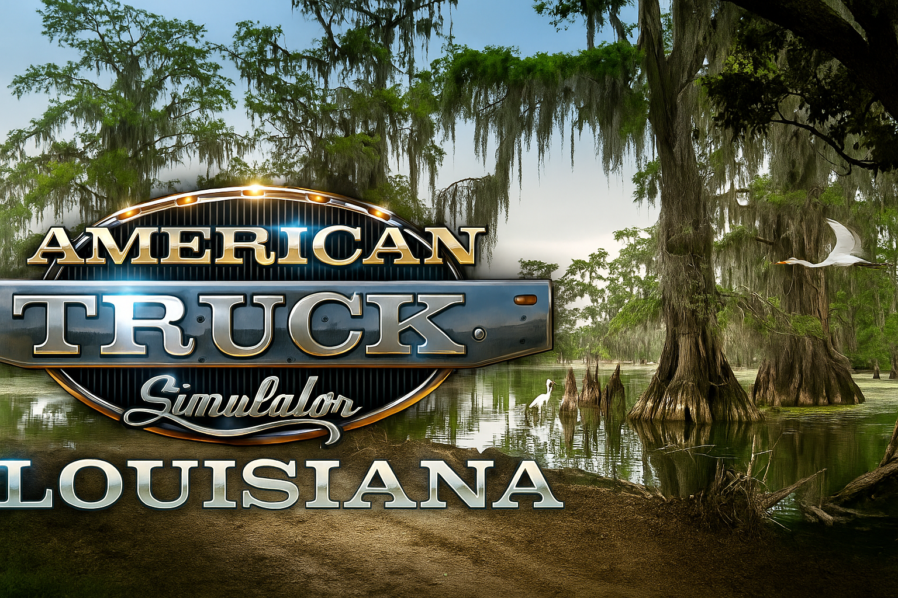
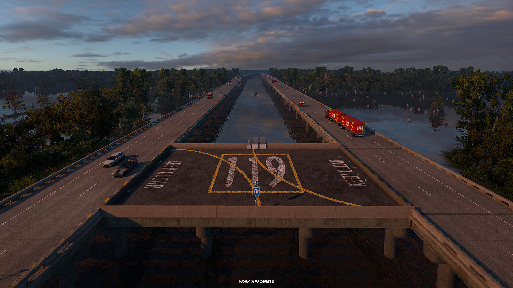
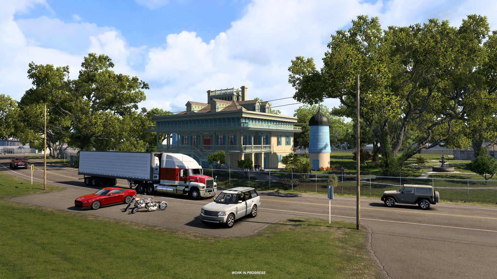
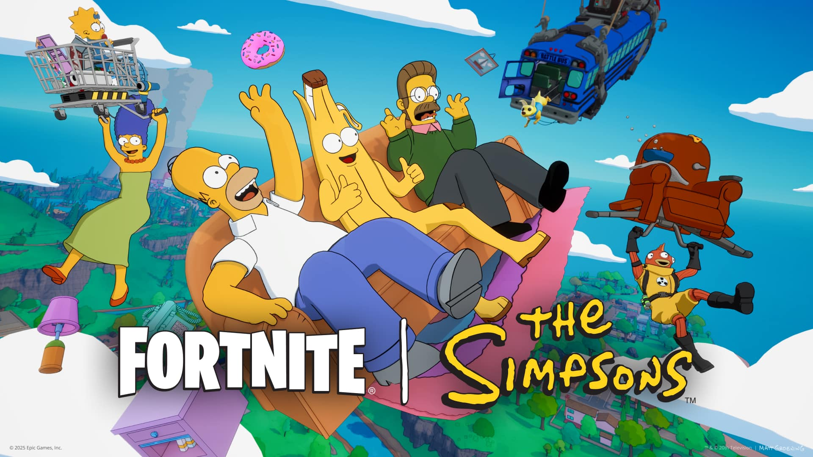
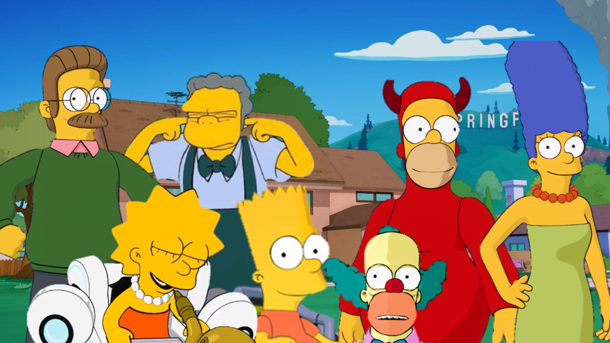

Get those engines checked, those windshield wipers tested, and the flaps rinsed, because we're heading to Louisiana in the next Truck Simulator DLC! This has been a long time coming — I've been personally waiting to get my wheels spinning in that Louisiana heat for over six years.
Ever since I was little... the road has called my name, but my leg issues kept me from getting my CDL. I found that American Truck Simulator can fill that void. I have a Dev Kit Oculus headset along with a HORI Racing Wheel Apex — that’s some TRUCKING POWER!
The assholes at thetruckreport.com won't take me in as one of them because I'm not a "real" trucker, which sums up my agony. It's good to be able to ground myself in my true self through technology. Thank you, Oculus, HORI, and American Truck Simulator — can't wait to play the DLC!


As you can tell, I'm ecstatic to get my hands on this — and you should be too. That's it for now. Don't let your dreams die, and especially don't let anyone tell you your dream isn't real. Fuck you, thetruckreport.com!!

I mean WOW... This is the greatest day of my life. I've been a MASSIVE Simpsons fan since I was little. I'd always go to sleep with season 7 blaring on the T.V. Without it, I'd have sleepless nights.
Fortnite released a banger for sure. They have classic characters like Moe and Ned and Bart and Homer and Marge all in one pass. Actually, I think Moe isn't in the pass, and neither is Bart.
I've played only a little bit, but I was awe-struck when THE WHOLE MAP was friggin' Springfield! I was freaking out going through classic areas. It's not screen accurate, but they did the best they could.

Overall, this season is a must-play for any Fortnite fan and a nostalgic trip for Simpsons lovers. The attention to detail on Springfield is incredible, and it’s obvious the devs had fun with this one.